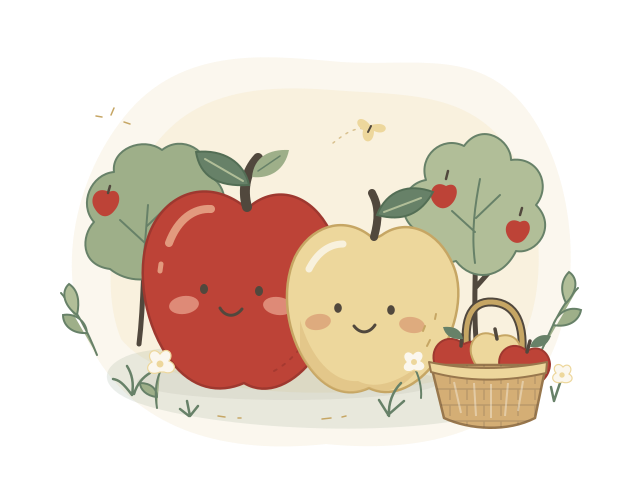

01みんなの人気者
Fuji
ふじ
甘みも、酸味も、いいとこどり。
果汁たっぷりの、頼れる定番です。
- 甘み
- 5段階中4
- 酸味
- 5段階中2
ようこそ、りんごの森へ
あまい子、すっぱい子、シャキッとした子。
ひとつひとつ、ちがうおいしさがあるんです。
あなたにぴったりのりんごを、見つけにいこう。
6つの品種と出会う、小さなりんご図鑑

ひとつずつ、Chapter 01 — Meet the apples
どんなおいしさが、お好みですか？
6種類のりんごをご紹介
Fuji
甘みも、酸味も、いいとこどり。
果汁たっぷりの、頼れる定番です。
Tsugaru
やさしい甘さと、みずみずしさ。
ひと足早く、秋を届けてくれる子。
Orin
ふわっと香る、黄緑色のりんご。
酸味が少なく、甘党さんにぴったり。
Jonagold
こくのある甘さに、ほどよい酸味。
そのままでも、お菓子にしても。
Kogyoku
きゅんとすっぱい、小さな赤い実。
パイやジャムで、香りが花ひらきます。
Shinano Gold
パリッとかじると、甘酸っぱさが。
さわやかな香りの、黄金色のりんご。
甘み・酸味は、この図鑑での相対的な目安です（5段階）。味や食感、旬は産地・栽培条件・保存状態によって変わります。
Chapter 02 — Side by side
それぞれの個性が、ひと目でわかる早見表。
小さな画面では、表を横にスクロールできます →
| りんごの品種 | 甘み / 5 | 酸味 / 5 | 食感 | おすすめの楽しみ方 |
|---|---|---|---|---|
| ふじ | 4 | 2 | シャキシャキ | そのまま、サラダに |
| つがる | 4 | 1 | みずみずしい | そのまま、ジュースに |
| 王林 | 5 | 1 | サクッと軽やか | そのまま、ヨーグルトに |
| ジョナゴールド | 3 | 4 | ジューシー | そのまま、焼きりんごに |
| 紅玉 | 2 | 5 | きゅっと緻密 | アップルパイ、ジャムに |
| シナノゴールド | 4 | 3 | パリッとかため | そのまま、サラダに |
A little note — From the orchard
手に持って重みがあり、皮にハリのあるものを。傷や傷みがないかも、そっと見てみましょう。
乾燥を防ぐためにポリ袋に入れて、冷蔵庫の野菜室へ。ほかの野菜や果物とは、袋を分けて保存しましょう。
流水でよく洗って、薄くスライス。皮の食感や香りも楽しめます。芯や種は取り除いてくださいね。